Engineering
The acquisition platform, processing pipeline and proposed alert interface.
Signal acquisition hardware
An Arduino UNO R3 acquisition stack with selectable EEG, ECG and EMG modes, live waveform preview and CSV/JSON/PNG export. Firmware checksums are pinned; a hardware verification report (2026-10-03) covers transport, recording and export. Public on GitHub ↗.
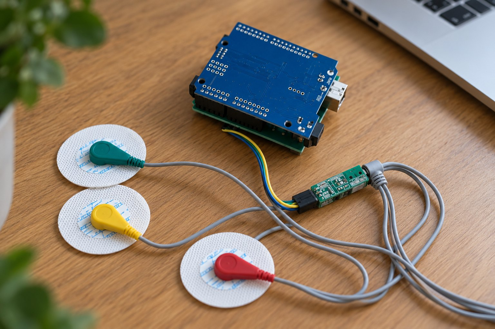
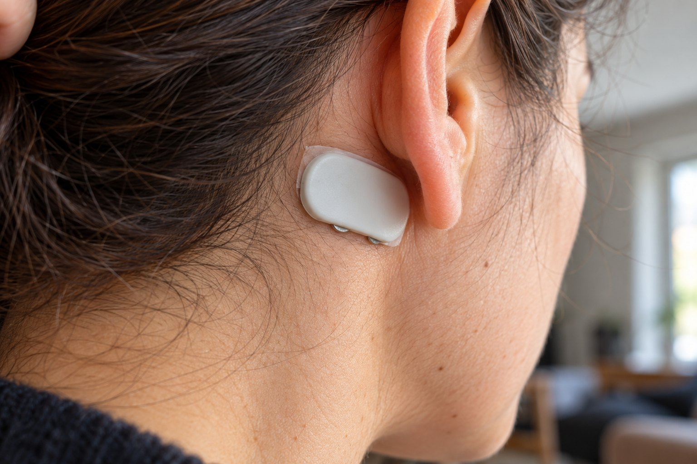
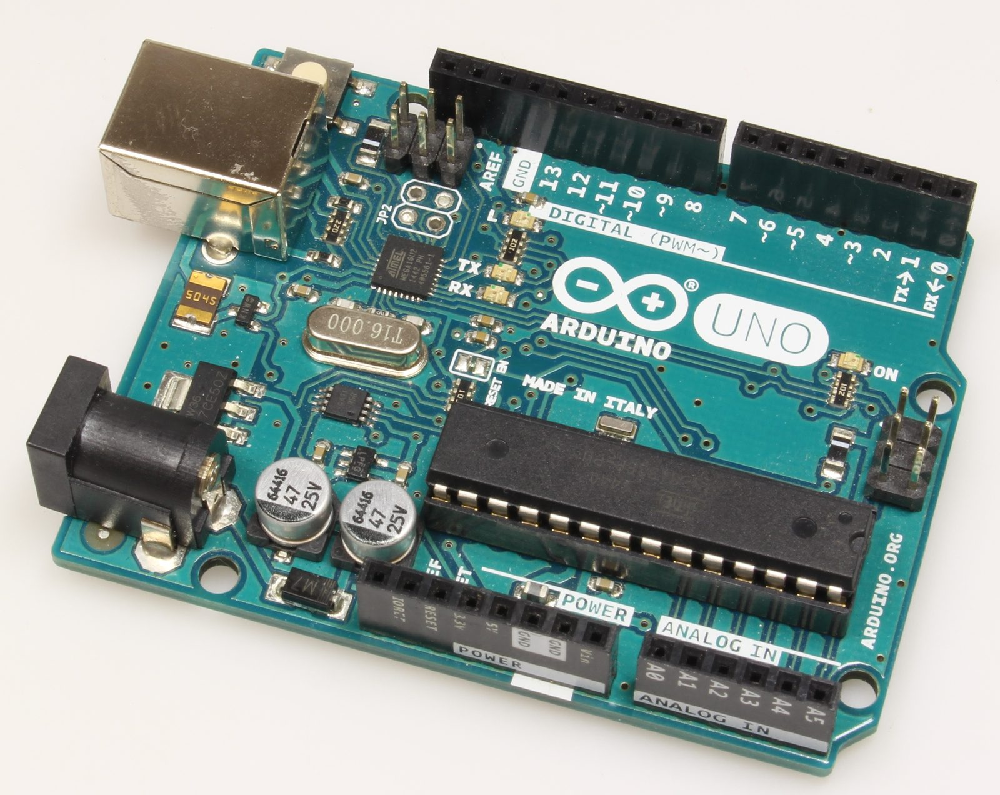
SeizeIT2: the actual recording setup
Two Sensor Dots. One recorder connects to the behind-ear EEG electrodes. The other records chest ECG and deltoid EMG. These are the research devices used for the dataset, separate from the ICTRA Arduino prototype.
Manufacturer wearing reference
Byteflies shows its Sensor Dot with wired behind-ear electrodes in an original product photograph. It illustrates a bilateral EEG setup, not a SeizeIT2 participant.
View the photograph on Byteflies ↗Linked at its original source; republication permission has not been confirmed, so the photograph is not redistributed here.
- EEG
Recorder 1 · upper back / neck - Wired electrodes behind both ears provide two EEG channels. The montage depends on the suspected seizure onset.
- ECG + EMG
Recorder 2 · left chest - Chest ECG and left-deltoid EMG electrodes connect to the same recorder. There is no separate arm recorder.
- ACC + GYR
Movement sensing inside the recorders - Both Sensor Dots contain an accelerometer and gyroscope; motion sensing does not require another wearable.
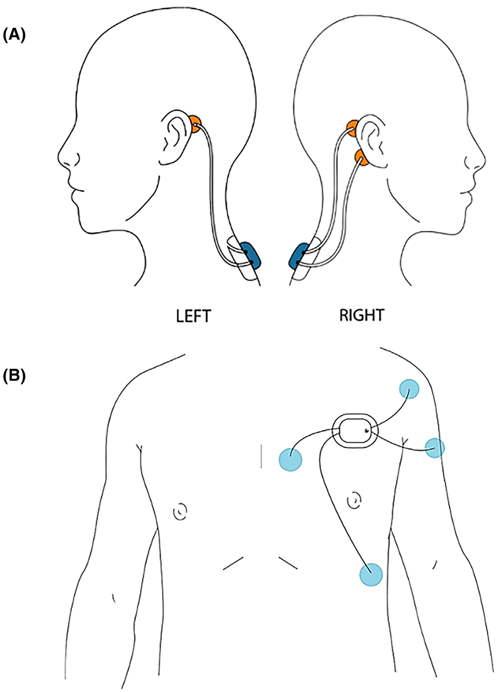
Acquisition and processing are different. The study acquired EEG, ECG and EMG at 250 Hz, and movement at 25 Hz. ICTRA resamples signals to 256 Hz for processing. Sources and image provenance
How the EEG montage varies
For focal onset, the published setup uses two electrodes behind the suspected side and one behind the opposite ear. Generalized-onset configurations use two behind each ear. The manufacturer photograph and the paper show different examples; they are not interchangeable placement instructions.
| Mode | Sampling | Band-pass | Why these numbers |
|---|---|---|---|
| EEG | 256 Hz | 0.5–29.5 Hz | Matches the 256 Hz the model is trained at; the model then applies its own 1–25 Hz band |
| ECG | 125 Hz → 256 Hz | 0.5–44.5 Hz | Enough for R-peak timing; resampled to 256 Hz in software today, sampled at 256 Hz in the next firmware |
| EMG | 500 Hz → 256 Hz | 60–100 Hz → 20–100 Hz + 60 Hz notch | The 60 Hz lower edge sits on North-American mains, so the next firmware widens the band and notches the hum, matching the training pipeline |
What is in the box
Read details
Arduino UNO R3 boards (one per modality in the current prototype), EEG/ECG/EMG analog front-end modules, gel snap and dry electrodes, USB cables. All modes use the UNO's A0 input at 115,200 baud. Measurements are ADC counts; microvolt calibration is a listed next step, which is why the models train on per-recording normalised signals.
Bill of materials: cost TBD · target: buildable from the repository in one afternoon.
Safety by design
Read details
Body acquisition only with the laptop on battery and no mains peripherals (the README rule). Firmware uploads verify source and HEX checksums in profiles.json. Lead-off detection marks data as missing rather than normal, so a fallen electrode degrades sensitivity visibly, never silently.
Next revision
Read details
All channels at 256 Hz with the training pipeline's filters, an accelerometer (SeizeIT2 has one and it is the cheapest strong signal for convulsions), then a single ESP32-class board with a three-channel front end, Bluetooth to a phone and on-device inference for the tree models. Honest status: the current board still saturates on part of its range, so model results come from SeizeIT2 and the board demonstrates feasibility.
Components up close
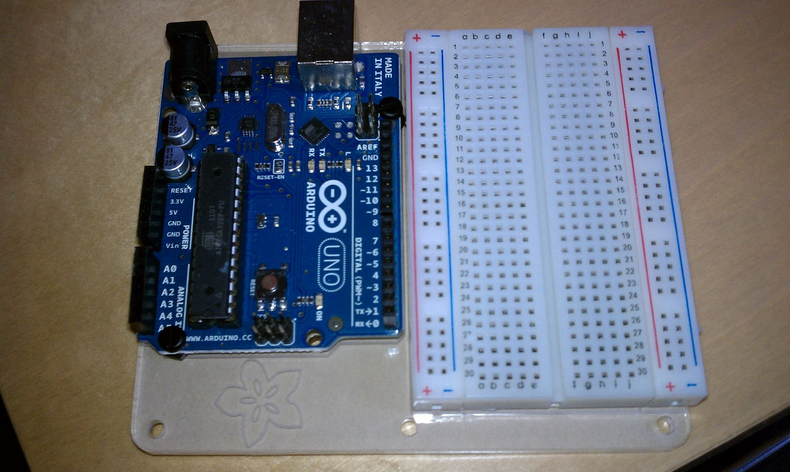
Bench prototyping hardware
An Arduino board beside a solderless breadboard. A general prototyping reference, not an assembled or body-connected biosignal circuit.
TreyDanger · CC BY 2.0 Source & license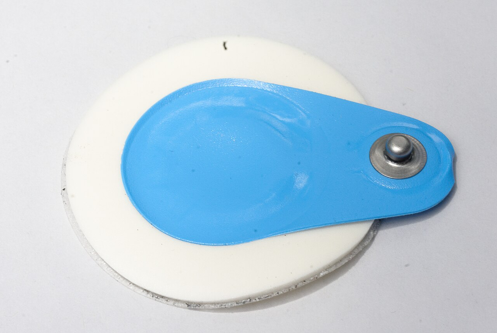
The electrode interface
A close-up of an ECG electrode and its snap connector. Component reference, not the project's specific electrode model.
Jud McCranie · CC BY-SA 4.0 Source & licenseSupplied conceptual hardware overview
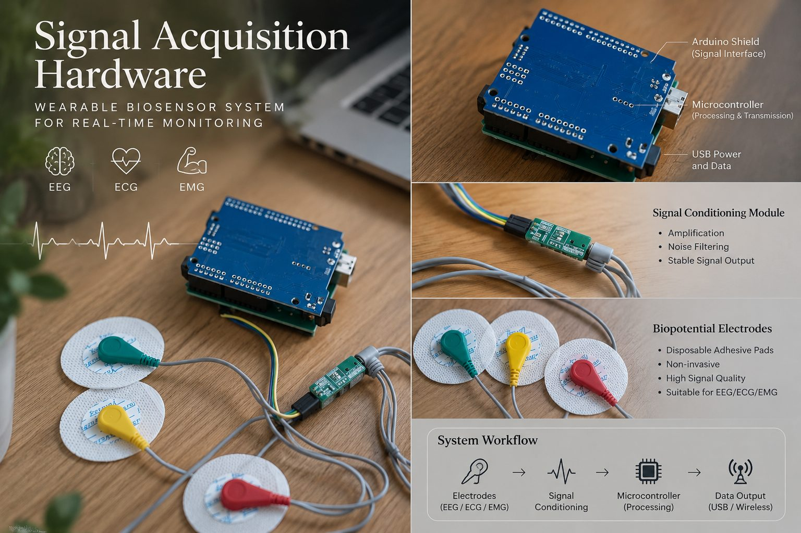
From acquisition to alert
Three signal sets, one classifier. EEG alone (A), EEG with ECG (B), and all four signals (C) each feed the same gradient-boosted model. Only its probability, after temporal filtering, can trigger an alert.
Processing the complete recording
A seizure is under one percent of the recording time, so the only way to measure false alarms honestly is to process every hour. That made the data engineering the first real engineering problem of the project, before any model was trained.
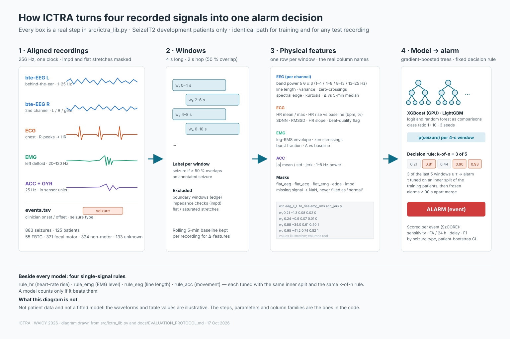
Resumable, verified, parallel
Read details
A catalog of every file with its size and checksum is built from the dataset's metadata first. The downloader then streams files to disk, resumes interrupted transfers, verifies each one, and lets several processes share the work through per-file locks that record their owner, so a crashed process never corrupts a file. Locked-test patients are refused until the pre-registration hash exists.
One code path, every signal
Read details
Every stream is resampled to 256 Hz, filtered, cut into 4-second windows and turned into physical features by a single library that the live device will also run. Flat or saturated stretches (one ECG file sat at a constant value for eight hours) are flagged and blanked rather than learned as "normal". A change to that library forces every feature to be rebuilt, by rule.
Scripts write numbers, the page only draws
Read details
The ICTRA Lab page shows download bars, files in flight with their speed, feature counters, the training-job grid, disk space and the log, and it refreshes itself. It never computes a metric: every script writes JSON and the page reads it, so the numbers on screen are the numbers in the report. A stall watch restarts any download that goes quiet for five minutes.
Inside the training run
The working pipeline, captured directly from ICTRA Lab. Follow the data preparation, the patient split and the experiment queue—not a mock dashboard or a concept render.
Static screenshots · captured 18 October 2026, 06:47–06:49 UTC. Dashboard clocks and log timestamps are preserved as displayed. Capture record
Downloads complete. Features ready.
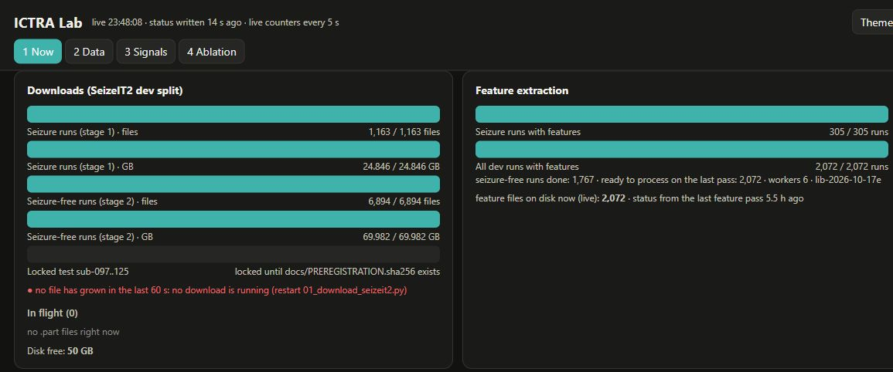
Stage 1 contains 1,163 files / 24.846 GB; stage 2 adds 6,894 files / 69.982 GB of seizure-free recordings. Feature extraction has reached 2,072 / 2,072 development runs, including 305 seizure-containing and 1,767 seizure-free runs.
The bars show data availability, not detection accuracy. The red “no download is running” message is an idle-downloader warning; both download totals are already complete. The locked-test row remains locked.
Separate people, not random windows.
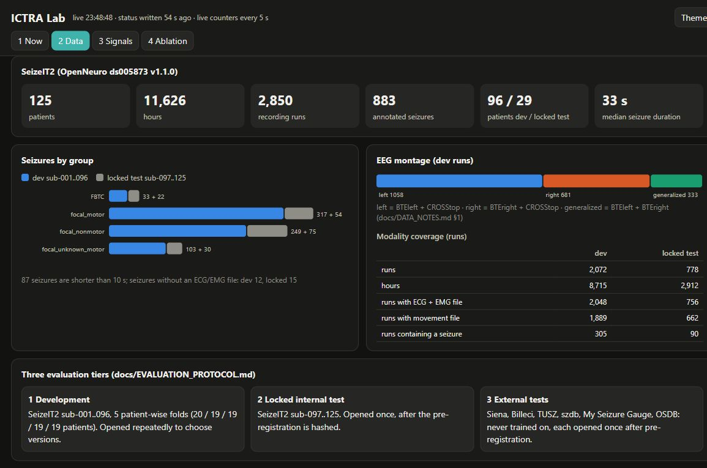
96 patients form the development set; 29 patients are reserved for the locked internal test. Development uses five patient-wise folds. Of 2,072 development runs, 2,048 have ECG + EMG files and 1,889 have a movement file.
File coverage is not proof that every sample is usable. The evaluation tiers describe the protocol, not three completed tests. Catalog hours are inventory totals, not the exposure denominator of every experiment; v01 uses only 2,288 hours of seizure-containing recordings.
A job grid, not a success score.
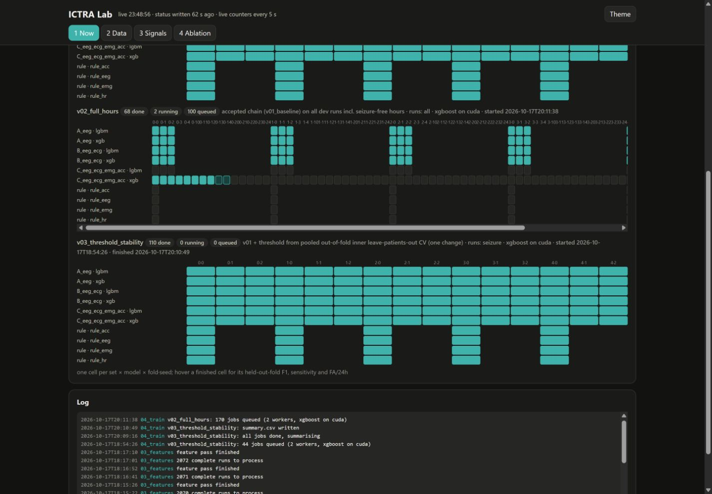
At capture, v02_full_hours shows 68 done, 2 running and 100 queued. Each cell represents an input set, model family, patient fold and seed. v02 extends the baseline to seizure-free hours; v03 tests a different threshold-selection procedure and shows 110 completed jobs.
Filled cells mean jobs finished—not that a version passed the acceptance rule. These are development folds; the separate locked test remains unopened in this capture. The log preserves the script's recorded sequence. See version decisions and their limits →
From processing to interpretation: read the real signal and ablation screens →
Historical record · first download and first training run, 17 October
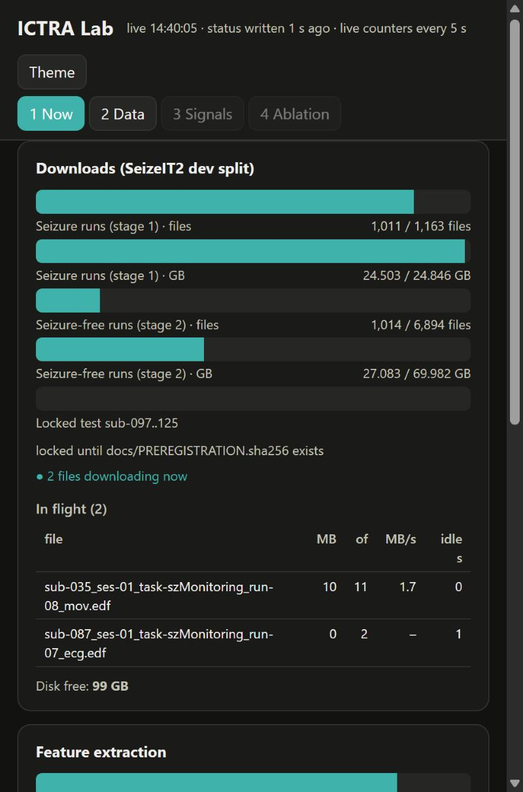
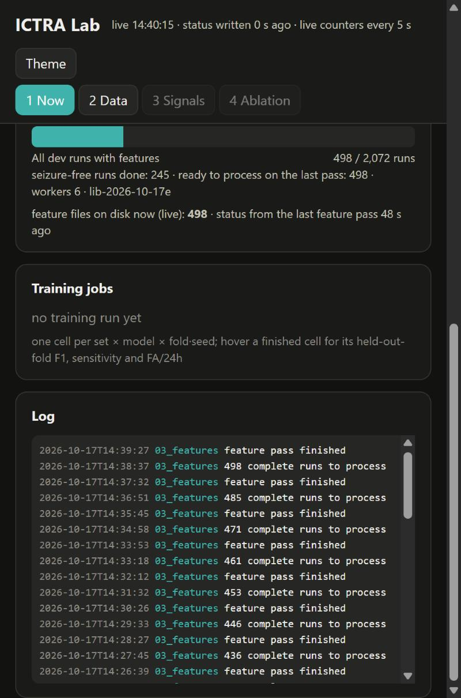
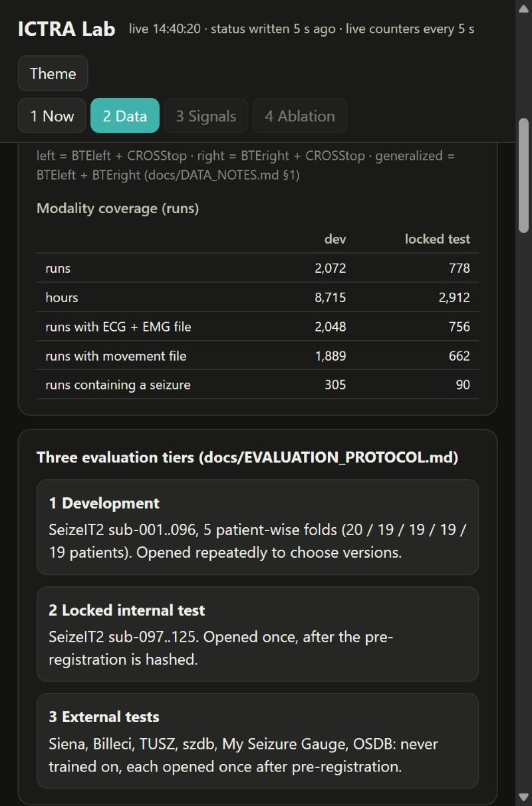
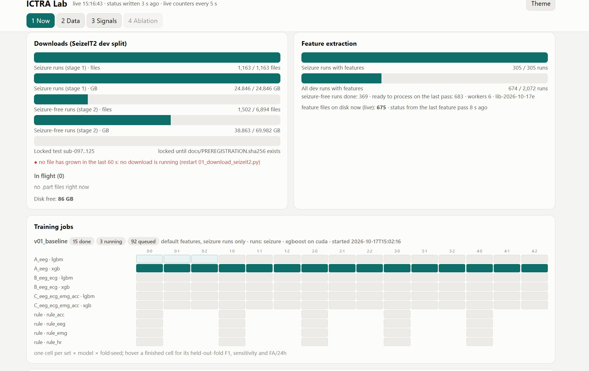
Historical screenshots taken on 17 October 2026 during the first download and the first training run. They are retained as a process record, not the current run state.
Patient, caregiver and clinician interfaces
The patient wants to forget the device exists. The caregiver wants to be woken only when it matters. The clinician wants evidence, not a diary. ICTRA gives each a different surface.
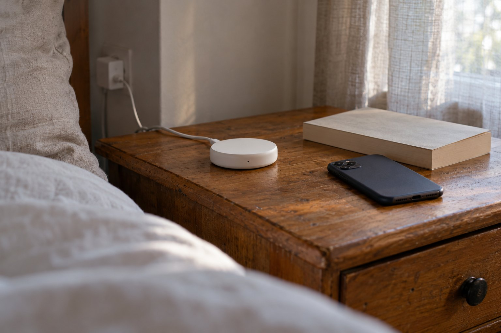
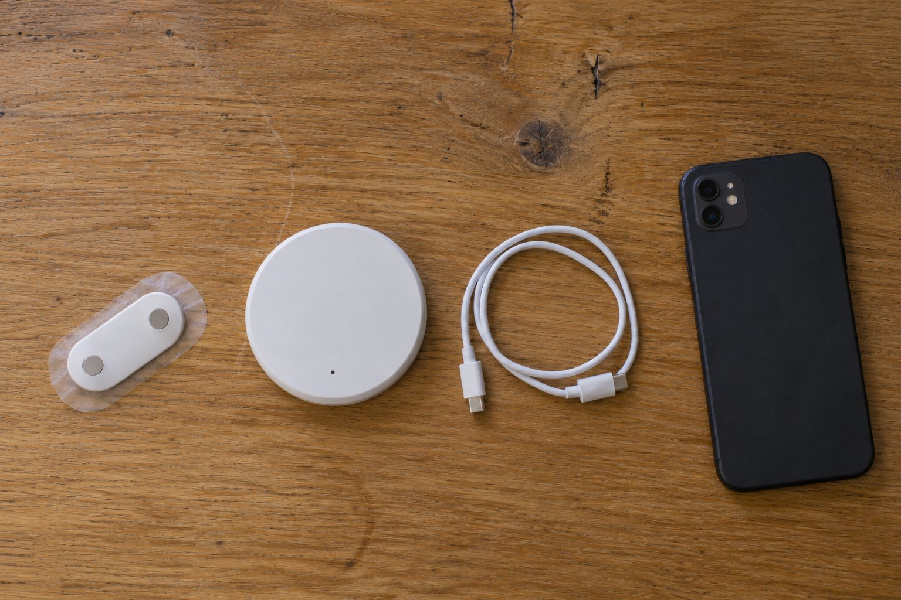
Nothing to manage
Discreet behind-the-ear and under-sleeve electrodes, no on-body display, one button to start and stop, electrodes changed daily. The patient sees every alert sent about them and controls the device; there is no location tracking.
Woken reliably, told how serious
Two-stage tone: a soft chime for "possible", a continuous alarm for "confirmed". Elapsed time counts up. One tap, "I'm with them", silences the alarm and logs the response time. Night mode uses a 1–3 kHz band and a paired-watch vibration.
Evidence behind every entry
A timeline of alerts with the three raw traces around each event, confirm/reject buttons, and CSV/PDF export for the appointment. Rejections feed the next training round.
Illustrative interface concept
One colour per signal, everywhere
EEG, ECG and EMG keep the same colour on the live waveform screen, in the alert snapshot and on the dashboard, so nobody re-learns the mapping. Colour is never the only cue: each state also has an icon and a word.
One number for the caregiver
The fused probability is the only quantity a caregiver sees, as a single rising bar. Per-signal detail lives one tap deeper, for the clinician.
Words that match what the system knows
"Possible seizure started 00:12 ago", never "Seizure detected". Setup is a four-screen wizard with electrode-placement photos, because placement is the step most likely to go wrong.
Wearable form-factor references
Published photographs of other research and monitoring devices. These examples do not establish the safety or performance of ICTRA.
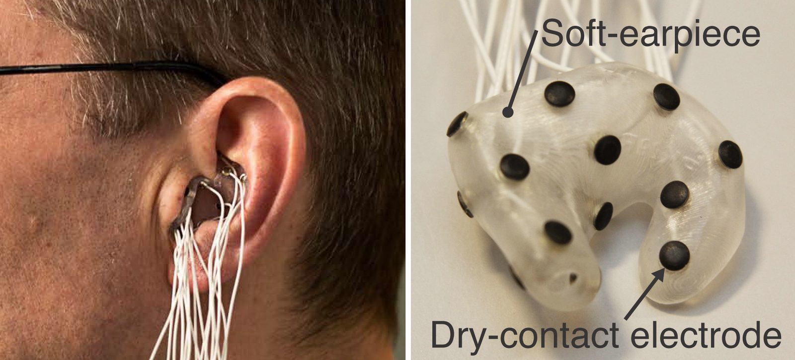
Smaller EEG form factors
An in-ear EEG research earpiece and its dry-contact electrodes. This is a different design from ICTRA's proposed behind-ear electrodes.
Simon L. Kappel · CC BY-SA 4.0 Source & license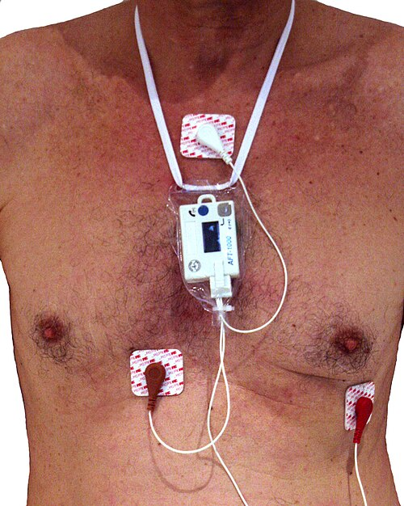
Wearable ECG recording
A compact Holter recorder with three electrodes. External ECG-monitoring example, not an ICTRA device or seizure detector.
Faisandier · CC BY-SA 3.0 Source & license